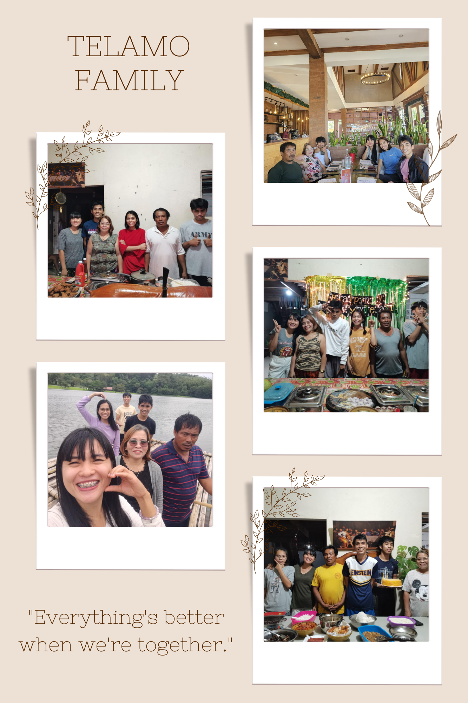
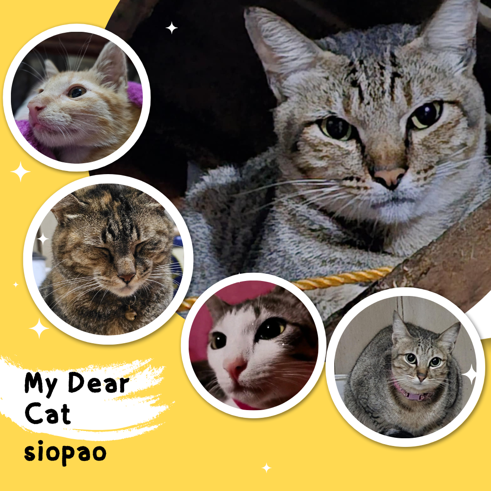
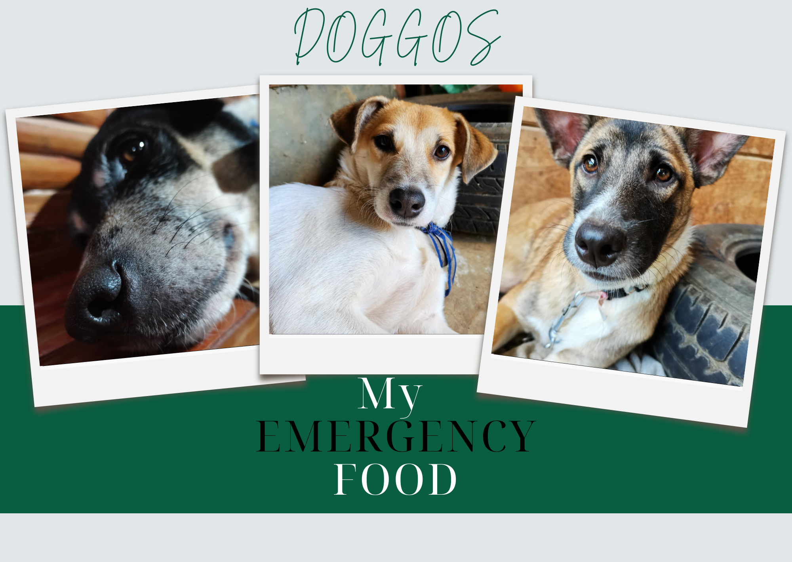

Flex Content
MY ONE AND ONLY FAMILY
I've always had the support and encouragement of my close-knit family. We have laughed a lot, supported one another through tough times, and celebrated many milestones together. My family instilled in me the values of tenacity, compassion, and diligence. It is indeed a joy to have such a loving and supporting family by my side.
MY FRIENDS

My friends are an essential part of my life. They are always there to share in my joys and sorrows, and their companionship means the world to me. We have shared countless memories and experiences that have shaped who I am today.
SIOPAO (Tobi, Tallula, Tara, Rio, and Tiny)
My Beloved Feline Family Tobi, Talula, Tara, Reo, and Tiny,These five cats Tobi, Talula, Tara, Reo, and Tiny they are more than just pets, they're an integral part of my life. Each one has a unique personality that enriches my days. and show me that im not alone These stray cats had heartbreaking origins. Tiny and Tobi were callously dumped into a river, Reo was abandoned in a filthy canal, and Talula and Tara were cruelly discarded in a sack. Despite my cat allergies, I couldn't turn a blind eye to their suffering. Driven by compassion, I chose to rescue and care for them all, providing them with a loving home.
EMERGENCY FOOD (Brada,Bangkie,and Babit)
In times of need, my friends Brada, Bangkie, and Babit are always there provide support. Their presence is a reminder that I am never alone, even in the most challenging times.These three dogs have heartwarming rescue stories. Bangkie wandered into my life one day and became my loyal companion. Babet and Brada were found abandoned at my sister's school, and our family couldn't bear to see them left to fend for themselves. So, we welcomed them into our home with open arms.